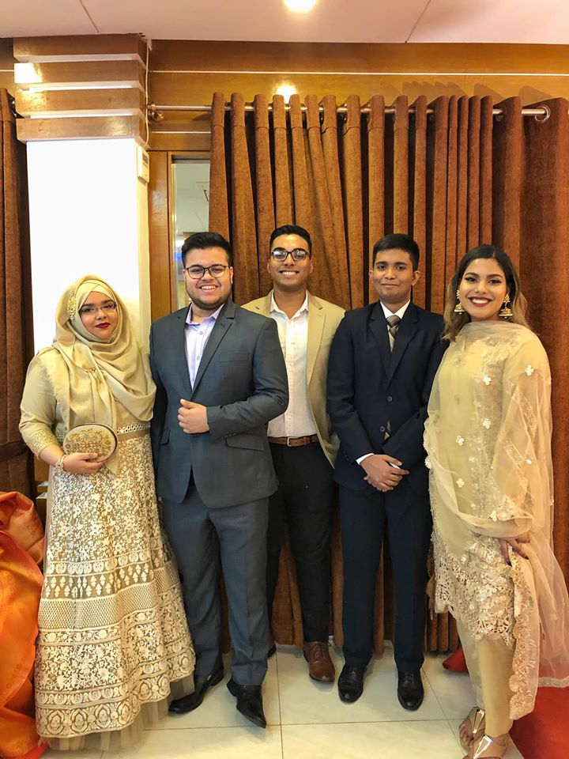
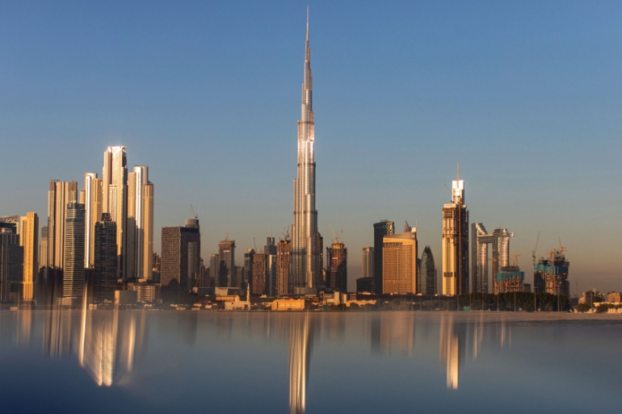

Sadat Tashkin
Intro: My name is Sadat Tashkin Chaudhury. I believe the key to happiness is to see success in failures. For example, I got a 36 in Functions 11 but I was able to look past that and see that math wasn't for me. Then I went into environental physics just to realize I didnt like physics either. I was in that program for a day and switched into business and now I'm trying to get into management. Funny thing is there is no end to the math. Its ironic isn't it? Life can really be a bitch. 3 times I tried Calc 1 and finally I think (haven't checked acorn yet) I passed. Now I'm one step closer to management. In my free time and my busy time I enjoy watching anime and netflix. The thing that sucks is while peoples course loads decrease in time mine will be increasing. From courses in first semester to 4 in second semester to 5 in the summmer. This is more like engineering than business. To celebrate this semester(and my cousin's wedding) I went to Bangladesh and there I learned to pose in photos thanks to my cousins. Well the break is over for most people but not me. I still have until the 11th. So heres to the rest of my well deserved break. If you're wondering where I am, I am nicely sandwiched between my 2 favourite people in the world.
Jan 10th, 2019: So its been a while since I updated my website. As of now, I am on the way back to Canada unfortunately. 3 weeks just flew by and now reality is about to kick in. I realized I skipped a week but oh well, it was probably the profs reading the course outline over and over again. Anyways I realize I have 4 courses so this is gonna be highschool overload. Thankfully I have farzad for 2 of my courses and Araf will help me to pass Calc 2. Reflecting on the wedding, the experience really brought me out of my shell and strengthened my relationship with my cousins. I even learned to pose and Araf won't let me live it down. He doesn't understand that it's not posing but my true feelings coming out. So I'll be back in a couple of hours and need a week to settle in. Till then I'll enjoy every second before landing in this putrid country.
I've come along from being the kid who was camera shy.
May 13th, 2021: Its been ages since I have seen my website. I actually forgot about it if I'm being honest. My life has changed drastically in 3 years ... for the better! Ya you know how it was going. Shit grades, my parents constantly being up my ass for dawats. Then Covid hit and my life took a turn. Most people hated it but it basically saved morning trips to UTSC. Who I'm I kidding I never go to campus. Online schooling began and I did what I always have done, nothing. The summer I took a couple of courses but I made Araf help me with them even though he had no idea what was going on. I told him that I was getting repayment for watching anime with him but really, Araf was constantly paying me ... with his time. So my dad was going through office troubles and finds a position in Dubai. I obviously had to sell it to my friends that I was dreading the move but this was the best news I got since Covid. Which brings us to now. I am currently living in paradise on earth. My friends tease me about it but I obviously put on an act that I wanna be back in that place of nightmares. Every positive covid case is another 4 months extension for my stay at Middle Eastern LA. So most of you are gonna ask me when do I plan on coming back. If everything goes according to plan, never. Covid will eventually go away but I can always turn to God to create a new virus that will extend my vacation. Till then I will enjoy life to the fullest.

May 21st, 2021: Today was a terrible day in my leisurely days in paradise. I was minding my own business playing Red Dead when suddenly I recieved a message from the groupchat. These past couple of days my friends have been torturing me about how easy I have it. I mean I do but like I don't want to be reminded of it. All I can do is stay quiet while they point out these hard truths. I put a couple of gifs here and there. That should shut them up and credit to myself for coming up with the some clever replies. As for the wedding, I was reminded of that as well today. My parents have put in the word that we should leave before August. I keep telling them whats the rush for. We still have enough time and we can arrive fashionably late on the day of the wedding. I heard some terrible news regarding the lockdown situation in Canada. Its getting better! My parents are stupid enough I can tell them that the lockdown will end June 3rd 2022 to extend my stay. As for the wedding either it should get postponed or moved to where I am or Bangladesh. Anywhere but there! Well I don't to ramble on about that horrible day. Until that day I will continue to relax and play video games and watch shows/anime. My friend hope to call me again and it better not be like today. Till then I will live how I have been living for the past 6 months ... in sheer bliss.